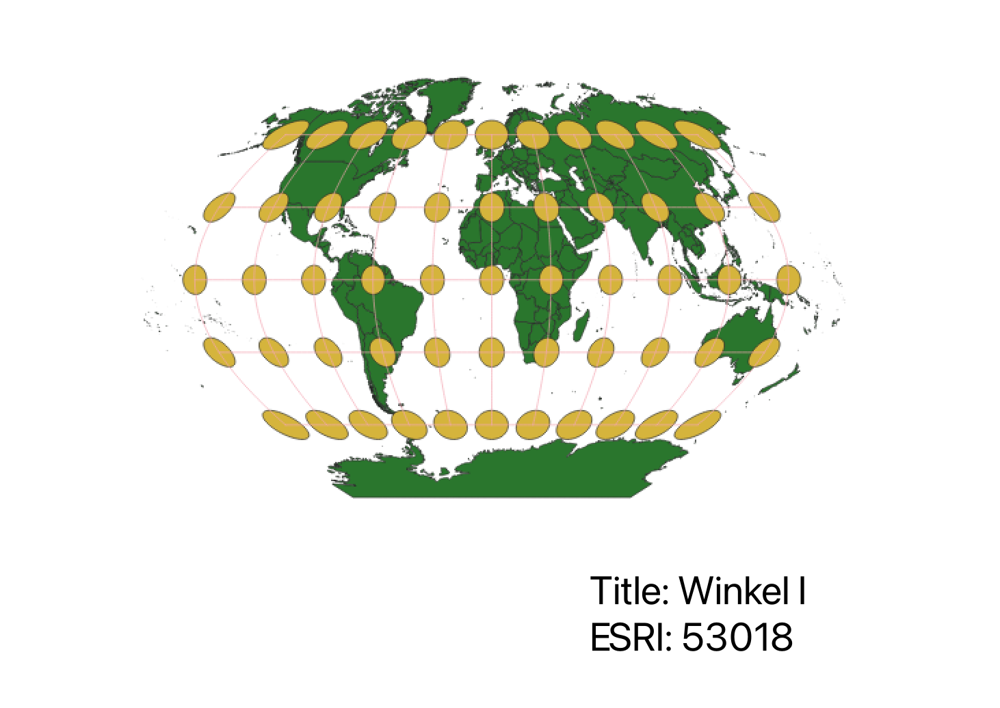
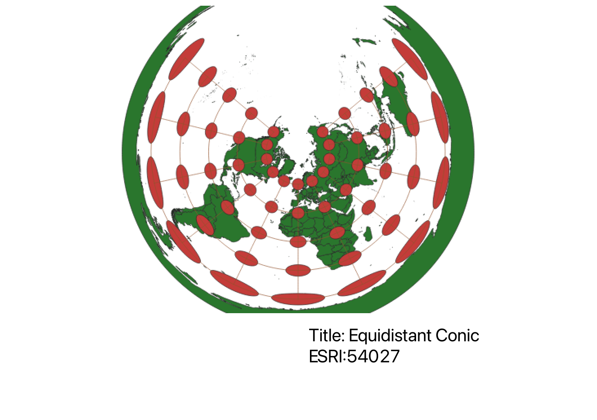
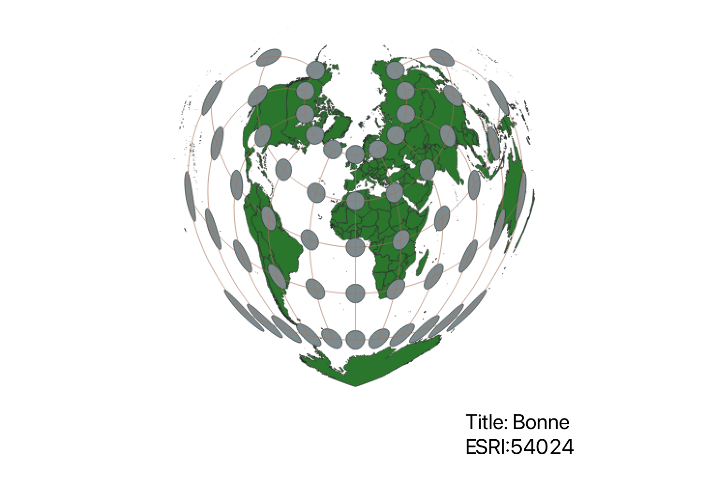

In this project I learned how to display images in different projections
By changing the Project Coordinate Reference System, I was able to display various projecions in QGIS, allowing to examine the differences between each view at face value. I downloaded the Indicatrix mapper to show how each projection was warped, and where it was warped, to better analyze each projection. I then used the Project Layout to create the png for each projection, and added labels to easily distinguish each projection from each other.
WGS84 Projection
This looks like a very classic world map, without much warping near the equator, but becomes warped near the poles.

Aitoff Projection
A more spherical world map, this projection allows for slightly less warping near the poles, trying to better replicate the earths shape as an ellipsoid.

Pseudo Mercator Projection
Similar to the WGS84 projection, but there is no warping, because of the way that it is flattened, but it is not as acurate to the shape of the world.
Winkel Projection
Very similar to the Aitoff Projection, showing the shape of the earth as an ellipsoid.

Equal Area Cylindrical Projection
Shaped like a flattened cylinder, there is a lot of warping near the poles, because it is not adjusted to fit flatly.
Equidistant Conic Projection
Viewed from the North Pole, there is extreme warping of the South Pole due to the view, but provides another way to look at the earth.

Azimuthal Equidistant Projection
Views also from the North Pole, this projection wraps all the way around the earth, rather than leaving part of it like the Equidistant Conic Projection.

Bonne Projection
Viewed almost like looking at a globe, there is warping on either side of the projection, due to it being almost collapsed as a globe shape.

Eckert I Projection
Similar to the Aitoff projection, but viewed at an angle rather than as an ellipsoid shape curve. Allows for minimal warping.
Data used for this project
Download Natrual Earth 1:10m Cultural Vector